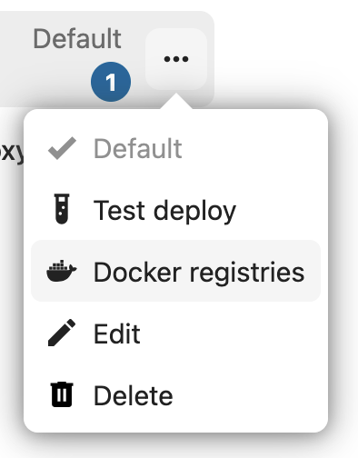
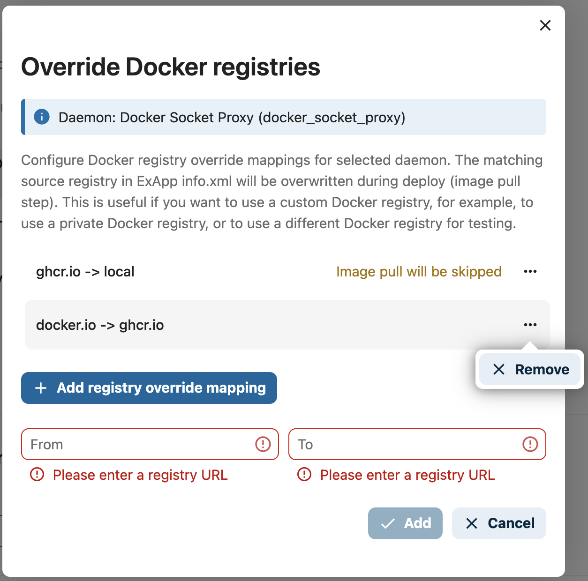

Managing Deploy Daemons
OCC CLI
There are a few OCC CLI commands to manage Deploy Daemons:
Register
occ app_api:daemon:registerUnregister
occ app_api:daemon:unregisterList registered daemons
occ app_api:daemon:listAdd a Docker registry mapping
occ app_api:daemon:registry:addRemove a Docker registry mapping
occ app_api:daemon:registry:removeList Docker registry mappings
occ app_api:daemon:registry:list
Register
Register Deploy Daemon (DaemonConfig).
Command: app_api:daemon:register [--net NET] [--haproxy_password HAPROXY_PASSWORD] [--compute_device COMPUTE_DEVICE] [--set-default] [--harp] [--harp_frp_address HARP_FRP_ADDRESS] [--harp_shared_key HARP_SHARED_KEY] [--harp_docker_socket_port HARP_DOCKER_SOCKET_PORT] [--harp_exapp_direct] [--] <name> <display-name> <accepts-deploy-id> <protocol> <host> <nextcloud_url>
Arguments
name- unique name of the daemon (e.g.docker_local_sock)display-name- name of the daemon (e.g.My Local Docker, will be displayed in the UI)accepts-deploy-id- type of deployment (docker-installormanual-install)host- path to docker-socket or the Docker Socket Proxy:address:portprotocol- protocol used to communicate with the Daemon/ExApps (httporhttps)nextcloud_url- Nextcloud URL, Daemon config required option (e.g.https://nextcloud.local)
Options
--net [network-name]-[required]network name to bind docker container to (default:host)--haproxy_password HAPROXY_PASSWORD-[optional]password for AppAPI Docker Socket Proxy--compute_device GPU-[optional]GPU device to expose to the daemon (e.g.cpu|cuda|rocm, default:cpu)--set-default-[optional]set created daemon as default for ExApps installation--harp-[optional]Flag to set daemon to use HaRP for all docker and exapp communication--harp_frp_address-[optional][host]:[port] of the HaRP FRP server, default host is same as HaRP host and port is 8782--harp_shared_key-[optional]HaRP shared key for secure communication between HaRP and AppAPI. It must matchHP_SHARED_KEYof the HaRP container. Thesome_very_secure_passwordvalue in the examples below is only a placeholder, see HaRP shared key.--harp_docker_socket_port-[optional]‘remotePort’ of the FRP client of the remote docker socket proxy. There is one included in the harp container so this can be skipped for default setups. (default: “24000”)--harp_exapp_direct-[optional]Flag for the advanced setups only. Disables the FRP tunnel between ExApps and HaRP.
Usage Examples
Register a HaRP deploy daemon within the
nextclouddocker network, with theappapi-harpcontainer as the host and theappapi-harp:8782as the FRP server address. This can be paired with a HaRP container running in the same network.occ app_api:daemon:register harp_proxy_docker "Harp Proxy (Docker)" "docker-install" "http" "appapi-harp:8780" "http://nextcloud.local" --net nextcloud --harp --harp_frp_address "appapi-harp:8782" --harp_shared_key "some_very_secure_password" --set-default --compute_device=cuda
Register a HaRP deploy daemon with the
localhostas the host and thelocalhost:8782as the FRP server address. This can be paired with a HaRP container running in the host network mode or that has exposed the ports8780and8782to the host.app_api:daemon:register harp_proxy_host "Harp Proxy (Host)" "docker-install" "http" "localhost:8780" "http://nextcloud.local" --harp --harp_frp_address "localhost:8782" --harp_shared_key "some_very_secure_password" --set-default --compute_device=cuda
Register a manual install deploy daemon with HaRP support. This can be paired with a HaRP container running in the same network. The HaRP container need not have access to a docker socket or any other ports exposed to the host. It will not create docker containers of the ExApps but will only proxy the requests to the ExApp process manually launched by the user.
Note
The ExApp process should have a FRP Client (frpc) running in the same network as the HaRP container or should be able to connect to the ports exposed by the HaRP container.If the communication has to go without the FRP client, the--harp_exapp_directflag should be provided. The localhost IP address is always used as the host in this case for manual deployments andOVERRIDE_APP_HOSTor the<app_id>is used for ExApp deployments. Take care not to use the host network mode or the default bridge network for this.app_api:daemon:register manual_install_harp "Harp Manual Install" "manual-install" "http" "appapi-harp:8780" "http://nextcloud.local" --net nextcloud --harp --harp_frp_address "appapi-harp:8782" --harp_shared_key "some_very_secure_password"
Register a Docker Socket Proxy deploy daemon with the
nextcloud-appapi-dsp:2375as the host and thenextclouddocker network. This can be paired with a Docker Socket Proxy container running in the same network with the default port2375.app_api:daemon:register docker_install "Docker Socket Proxy" "docker-install" "http" "nextcloud-appapi-dsp:2375" "http://nextcloud.local" --net=nextcloud --set-default --compute_device=cuda
Register a manual deploy daemon with
host.docker.internalas the host used to connect to the ExApps.app_api:daemon:register manual_install "Manual Install" "manual-install" "http" null "http://nextcloud.local"
Register a local docker deploy daemon with the
/var/run/docker.sockas the socket and the host, and thenextclouddocker network. This does not need a Docker Socket Proxy container. The compute device used by this daemon isCPU.app_api:daemon:register local_docker "Docker Local" "docker-install" "http" "/var/run/docker.sock" "http://nextcloud.local" --net=nextcloud
Register a local docker deploy daemon with the
/var/run/docker.sockas the socket and the host, and thenextclouddocker network. This does not need a Docker Socket Proxy container. The compute device used by this daemon isCUDA(NVIDIA).app_api:daemon:register local_docker "Docker Local" "docker-install" "http" "/var/run/docker.sock" "http://nextcloud.local" --net=nextcloud --set-default --compute_device=cuda
DeployConfig
DeployConfig is a set of additional options in Daemon config, which are used in deployment algorithms to configure ExApp container.
{
"net": "host",
"nextcloud_url": "https://nextcloud.local",
"haproxy_password": "some_secure_password",
"computeDevice": {
"id": "cuda",
"name": "CUDA (NVIDIA)",
},
"harp": {
"frp_address": "localhost:8782",
"docker_socket_port": "24000",
"exapp_direct": false
},
"resourceLimits": {
"memory": 2147483648,
"nanoCPUs": 2000000000
},
"registries": [
{"from": "ghcr.io", "to": "registry.example.com"}
]
}
DeployConfig options
net[required] - network name to bind docker container to (default:host)
nextcloud_url[required] - Nextcloud URL (e.g.https://nextcloud.local)
haproxy_password[optional] - password for AppAPI Docker Socket Proxy
computeDevice[optional] - Compute device to attach to the daemon (e.g.{ "id": "cuda", "label": "CUDA (NVIDIA)" })
harp[optional] - HaRP options, can benullin case of non-HaRP setups
frp_address[optional] - [host]:[port] of the HaRP FRP server, default host is same as HaRP host and port is 8782
docker_socket_port[optional] - ‘remotePort’ of the FRP client of the remote docker socket proxy. There is one included in the harp container so this can be skipped for default setups. [default: “24000”]
exapp_direct[optional] - Flag for the advanced setups only. Disables the FRP tunnel between ExApps and HaRP.
resourceLimits[optional] - limits applied to each ExApp container deployed by this daemon. Empty ([]) when no limits are set, and absent for daemons registered over the CLI, both of which mean unlimited. Each limit is only present when it is set
memory[optional] - memory limit in bytes (e.g.2147483648for 2 GiB). In the admin settings this is entered in MiB
nanoCPUs[optional] - CPU limit in nanoCPUs, where1000000000equals one CPU core (e.g.2000000000for 2 cores). In the admin settings this is entered in cores
registries[optional] - list of Docker registry mappings, each entry being a{"from": ..., "to": ...}pair
Unregister
Unregister Deploy Daemon (DaemonConfig).
Command: app_api:daemon:unregister <daemon-config-name>
List registered daemons
List registered Deploy Daemons (DaemonConfigs).
Command: app_api:daemon:list
Docker registry mappings
Added in version 32.0.0.
Every ExApp declares in its info.xml the registry its image is pulled from, usually ghcr.io or docker.io.
A Deploy Daemon can override those registries so that images are pulled from somewhere else, without any change to the
ExApp itself. This is useful when your servers have no access to the public registries, when you mirror the ExApp
images into a private registry, or when you want to test locally built images.
Note
Registry mappings apply to daemons of the docker-install and kubernetes-install types. They have no effect
on manual-install daemons, because those do not pull images.
Finding the registry of an ExApp
The registry to map is the one in the <registry> element of the <docker-install> section of the ExApp’s
info.xml, which is part of the ExApp source:
<info>
...
<external-app>
<docker-install>
<registry>ghcr.io</registry>
<image>example-org/exapp_name</image>
<image-tag>1.0.0</image-tag>
</docker-install>
...
</external-app>
</info>
Together these three elements form the image that is pulled, ghcr.io/example-org/exapp_name:1.0.0. To redirect this
ExApp, add a mapping with ghcr.io as the source registry.
Important
Only the registry is replaced. The <image> and <image-tag> values are used unchanged, so the image must be
available in your custom registry under exactly the same repository path and tag, in this example
example-org/exapp_name:1.0.0. Mirror the image with its original name, for instance:
docker pull ghcr.io/example-org/exapp_name:1.0.0
docker tag ghcr.io/example-org/exapp_name:1.0.0 registry.example.com/example-org/exapp_name:1.0.0
docker push registry.example.com/example-org/exapp_name:1.0.0
On Docker daemons with a compute device, AppAPI first looks for the tag with the device appended, for example
1.0.0-cuda or 1.0.0-rocm, and falls back to the plain tag when it is missing. Mirror these tags as well,
otherwise a GPU daemon deploys the plain tag.
How mappings are applied
A mapping is a pair of registry domains: from is the registry declared by the ExApp, and to is the registry
that should be used instead. During deployment, at the image pull step, AppAPI compares the ExApp registry with the
from value of each mapping. On the first match, the registry part of the image name is replaced with to, while
the image name and tag stay untouched:
mapping: ghcr.io -> registry.example.com
declared: ghcr.io/example-org/exapp_name:1.0.0
pulled: registry.example.com/example-org/exapp_name:1.0.0
The special target local does not rewrite the image name. Instead it skips the image pull entirely, and the image is
expected to already be present on the Docker host under its original name, either pulled manually beforehand or built
locally:
mapping: ghcr.io -> local
declared: ghcr.io/example-org/exapp_name:1.0.0
pulled: nothing, the image already present on the host is used
On Kubernetes, local makes HaRP create the ExApp Pod with imagePullPolicy: Never, so the image has to be
present under its original name on every node that can run the Pod. This needs a HaRP version newer than 0.4.5. Older
versions use IfNotPresent, which takes the image from the node if it is there and otherwise pulls it from the
original registry.
Warning
With a local target, AppAPI cannot pull a missing image. If the image is absent from the Docker host,
deployment of the ExApp fails at the container creation step. On Kubernetes, the ExApp Pod fails to start with
ErrImageNeverPull instead. On an update, the container of the previous version is already removed at that
point, so the ExApp is left without a running container until the image is provided and the ExApp is deployed
again.
Mappings are stored per daemon in the registries key of its DeployConfig, and are
applied to every ExApp deployed through that daemon. Only one mapping per from registry is allowed, and existing
ExApp containers are not affected: a mapping takes effect the next time an ExApp is deployed or updated.
Important
AppAPI does not send registry credentials when pulling images, so on Docker the registry has to allow anonymous
pulls. Running docker login on the Docker host does not change this: it stores the credentials for the
docker command line client only, and the Docker daemon does not use them for the pulls requested by AppAPI.
For a registry that requires authentication, pull the image manually, tag it with its original name and use the
local target:
docker login registry.example.com
docker pull registry.example.com/example-org/exapp_name:1.0.0
docker tag registry.example.com/example-org/exapp_name:1.0.0 ghcr.io/example-org/exapp_name:1.0.0
On Kubernetes, the nodes pull the images. For a registry that requires authentication, add an image pull secret
to the default service account of the ExApp namespace, as described in the
HaRP documentation.
Web interface
Open the AppAPI admin settings, click the three-dots menu of a Deploy Daemon and select Docker registries:

In the Override Docker registries dialog, the configured mappings are listed, and mappings with the local
target are marked with Image pull will be skipped. Click Add registry override mapping, fill in the From and
To fields, and confirm with the Add button. To delete a mapping, use Remove in the three-dots menu of the
respective list entry:

Add a registry mapping
Add a Docker registry mapping to a Deploy Daemon.
Command: app_api:daemon:registry:add [--registry-from REGISTRY-FROM] [--registry-to REGISTRY-TO] [--] <name>
name- name of the Deploy Daemon the mapping is added to (e.g.docker_install)--registry-from-[required]registry declared by the ExApp (e.g.ghcr.io)--registry-to-[required]registry to use instead, orlocalto skip the image pull
The command fails if the daemon does not exist, if a mapping for the same from registry is already configured, or
if both registries are the same.
Pull images that ExApps declare on
ghcr.iofrom a private registry instead:sudo -E -u www-data php occ app_api:daemon:registry:add docker_install --registry-from "ghcr.io" --registry-to "registry.example.com"
Use images that are already present on the Docker host instead of pulling them from
ghcr.io:sudo -E -u www-data php occ app_api:daemon:registry:add docker_install --registry-from "ghcr.io" --registry-to "local"
Remove a registry mapping
Remove a Docker registry mapping from a Deploy Daemon. Both registries of the mapping must be given, so that the exact pair is removed.
Command: app_api:daemon:registry:remove [--registry-from REGISTRY-FROM] [--registry-to REGISTRY-TO] [--] <name>
name- name of the Deploy Daemon the mapping is removed from (e.g.docker_install)--registry-from-[required]source registry of the mapping to remove--registry-to-[required]target registry of the mapping to remove
sudo -E -u www-data php occ app_api:daemon:registry:remove docker_install --registry-from "ghcr.io" --registry-to "registry.example.com"
List registry mappings
List the Docker registry mappings configured for a Deploy Daemon.
Command: app_api:daemon:registry:list <name>
name- name of the Deploy Daemon to list the mappings of (e.g.docker_install)
sudo -E -u www-data php occ app_api:daemon:registry:list docker_install
The mappings are printed as from -> to pairs:
Configured registries for daemon "docker_install":
- ghcr.io -> registry.example.com
- docker.io -> local
Nextcloud AIO
In the case of AppAPI installed in AIO, a default Deploy Daemon is registered automatically. It is possible to register additional Deploy Daemons using the same methods as described above.
Additional options
Currently, the following options are available:
OVERRIDE_APP_HOST- can be used to override the host that will be used for ExApp binding (not passed to ExApp container envs)